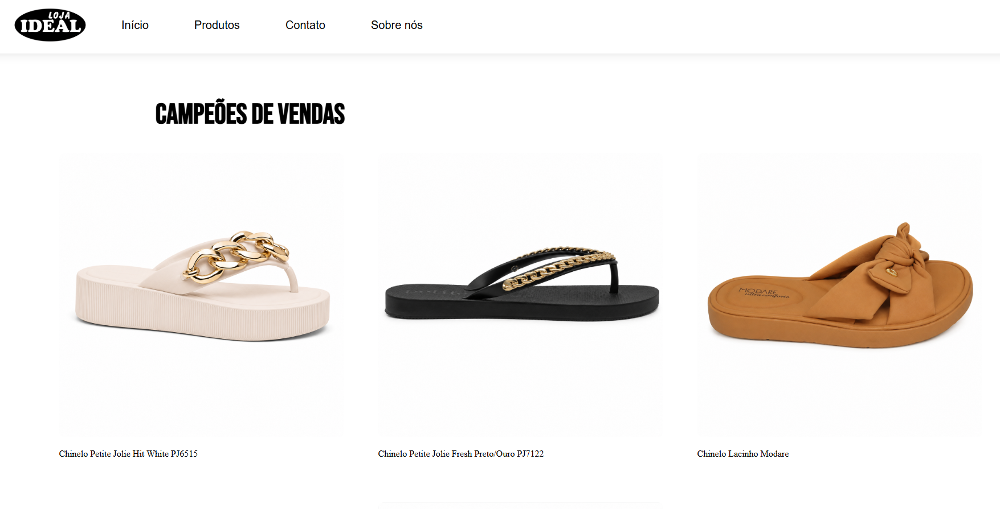
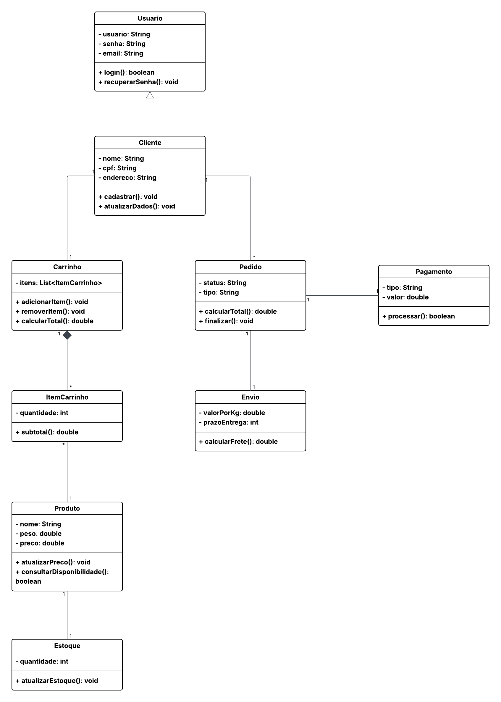

Site de apresentação para loja
Site em desenvolvimento utilizando HTML e CSS para apresentação de loja e aprendizado em desenvolvimento web.
"Meu ponto de partida não define onde vou chegar."
Oi! Eu sou a Ana Karoline, tenho 21 anos e moro no interior da Bahia. Atualmente estou cursando Análise e Desenvolvimento de Sistemas e venho descobrindo cada vez mais o quanto gosto da área de tecnologia. Estou sempre aprendendo coisas novas e buscando melhorar minhas habilidades em programação e desenvolvimento web. Sou uma pessoa dedicada, curiosa e determinada, que gosta de enfrentar desafios e evoluir constantemente. Acredito que, com esforço, disciplina e persistência, é possível conquistar grandes objetivos, e é isso que me motiva a seguir em frente todos os dias em busca de um futuro melhor.

Site em desenvolvimento utilizando HTML e CSS para apresentação de loja e aprendizado em desenvolvimento web.

Projeto acadêmico desenvolvido na faculdade, com modelagem UML de um sistema de vendas online